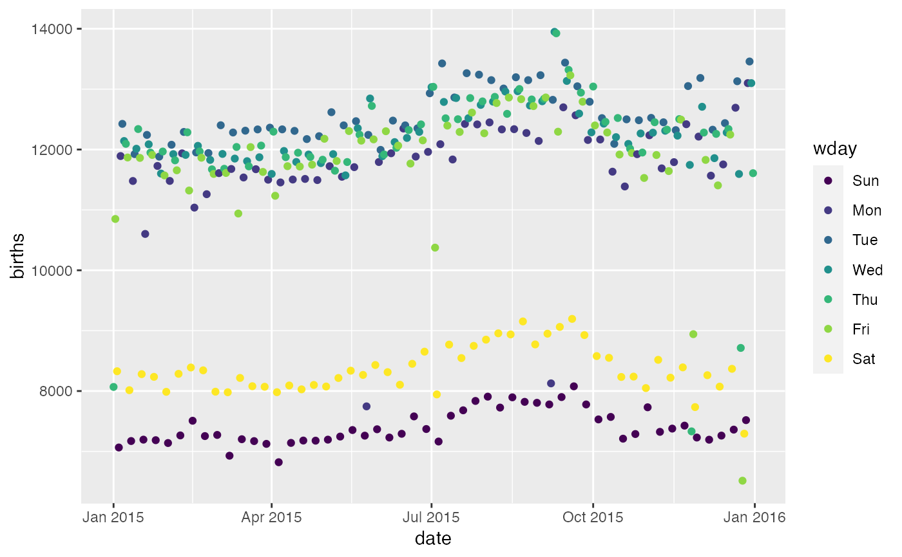

A day by day record of the number of births in the United States in 2015.
data(Births2015)
A data.frame with 365 observations on the following 8 variables.
date Date
births Number of births on date (integer)
wday Day of week (ordered factor)
year Year (integer)
month Month (integer)
day_of_year Day of year (integer)
day_of_month Day of month (integer)
day_of_week Day of week (integer)
Obtained from the National Center for Health Statistics, National Vital Statistics System, Natality, 2015 data.
data(Births2015) if (require(ggformula)) { gf_point(births ~ date, data = Births2015) gf_point(births ~ date, data = Births2015, color = ~ wday) }if (require(dplyr)) { Births78 %>% group_by(wday) %>% summarise(births = sum(births)) %>% ungroup() %>% mutate(frac = births / sum(births)) Births2015 %>% group_by(wday) %>% summarise(births = sum(births)) %>% ungroup() %>% mutate(frac = births / sum(births)) }#>#>#> # A tibble: 7 x 3 #> wday births frac #> <ord> <dbl> <dbl> #> 1 Sun 384686 0.0967 #> 2 Mon 610448 0.153 #> 3 Tue 654462 0.164 #> 4 Wed 638513 0.160 #> 5 Thu 640422 0.161 #> 6 Fri 615397 0.155 #> 7 Sat 434569 0.109